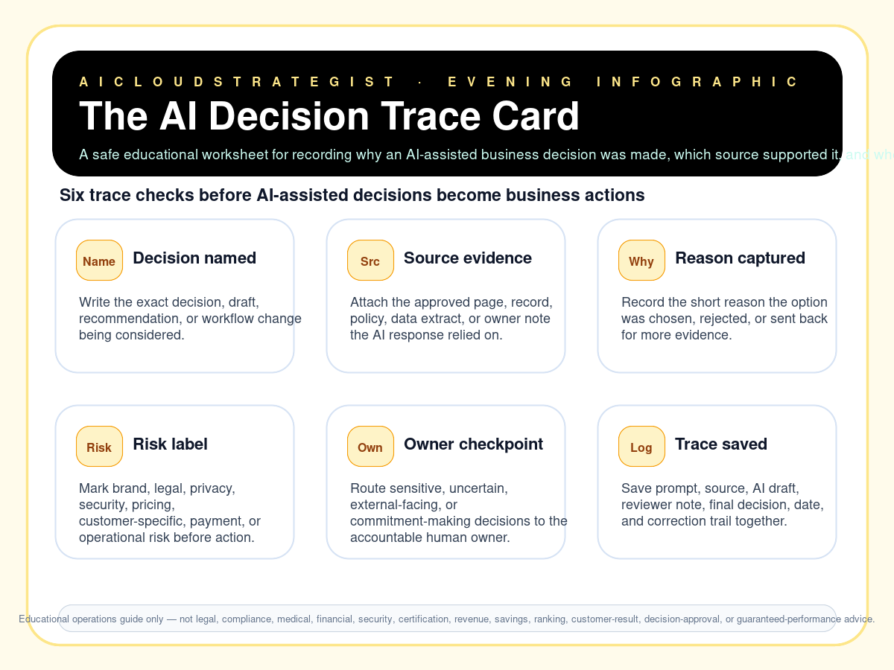

Evening publication · decision trace
The AI Decision Trace Card
A safe educational worksheet for recording why an AI-assisted business decision was made, which source supported it, and when a human owner must review it.

Six AI decision-trace checks
- Decision named: Write the exact decision, draft, recommendation, or workflow change being considered.
- Source evidence: Attach the approved page, record, policy, data extract, or owner note the AI response relied on.
- Reason captured: Record the short reason the option was chosen, rejected, or sent back for more evidence.
- Risk label: Mark brand, legal, privacy, security, pricing, customer-specific, payment, or operational risk before action.
- Owner checkpoint: Route sensitive, uncertain, external-facing, or commitment-making decisions to the accountable human owner.
- Trace saved: Save prompt, source, AI draft, reviewer note, final decision, date, and correction trail together.
Reusable trace examples
| Decision area | Decision example | Evidence required | Owner checkpoint |
|---|---|---|---|
| External customer answer | Send, edit, pause, or route a drafted answer | Approved source page or owner note | Account owner before commitments |
| Operational automation | Automate, partially automate, or keep manual review | Process owner note and sample edge cases | Process and data owner |
| Policy-sensitive draft | Answer privacy, security, legal, or compliance-like questions | Current approved policy or adviser-reviewed text | Appropriate adviser or accountable owner |
Need a practical review?
Contact AICloudStrategist for a free review of your website, lead capture, AI-workflow evidence, or trust-readiness gaps before sensitive automation goes live.
Contact AICS or use WhatsApp from the main site.
Truth boundary
Educational operations guide only — not legal, compliance, medical, financial, security, certification, revenue, savings, ranking, customer-result, decision-approval, or guaranteed-performance advice.